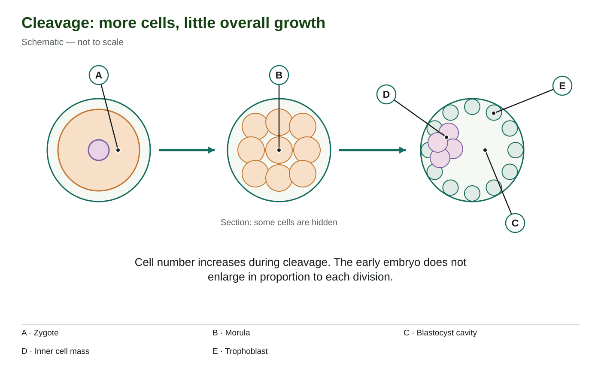

Learn · Chapter 15
How does one cell become an implanted early embryo?
Learning goal
Distinguish cleavage, morula, blastocyst and implantation, and connect each stage with its location and cell organization.
Before you begin
Fertilization produces a single zygote in an oviduct. Cell division increases cell number, but growth also requires an increase in total material.
Expected work: one completed lesson check. Supported practice, videos and textbook questions are optional. Saved writing is not automatically graded.
Chapter 15 · printed pp. 509–511
Key terms: · · ·
Key terms
Use these definitions when you need help with a term.
The zygote begins as one cell in an oviduct. As it travels toward the uterus, it undergoes mitosis: DNA is copied and then distributed so that daughter cells receive the chromosome information needed for further development. Division of the cytoplasm separates the cells. Repeated early divisions are called .
Why do the cells become smaller? The divisions partition the starting cytoplasm faster than the whole early embryo adds new material. Two cells can divide into four, and four into eight, while the overall volume changes relatively little. More cells therefore share approximately the same starting volume. They do not each grow back to the original zygote's size between these rapid divisions.
Imagine dividing one lump of modelling clay into two pieces, then four. The number of pieces rises while the total amount of clay stays the same. The comparison explains partitioning only: living cells also copy DNA, use energy and regulate division. Cleavage is not simply cutting inactive material.
Read the schematic from left to right. A identifies the one-cell zygote, B a later compact cell ball, and the right-hand structure a blastocyst. The arrows show developmental order. Several intermediate divisions are omitted. The equal outer outlines emphasize little early enlargement; the drawing is not a measured growth graph, and the visible circles in B are only some cells in a section.

[Figure: The sequence distinguishes a single zygote, a solid morula and a blastocyst with an inner cell mass and cavity. | ./assets/figures/ch15-cleavage.svg]Cell number and chromosome number must also be kept separate. Normal mitosis preserves the diploid chromosome complement in each daughter cell after division. It does not add another sperm contribution each time the cell number doubles. Cleavage divides the developing structure while maintaining the inherited information in its cells.
A compact, solid ball of early cells is a morula. The textbook describes it at about the 16-cell stage, a few days after . The identifying feature is the compact cell organization rather than an exact count visible in one drawing. A section cannot necessarily show every cell in the whole structure.
A fluid-filled cavity develops as the cells reorganize into a blastocyst. In the right-hand part of the schematic, C points into that cavity. D points to the cluster on one side, the inner cell mass. E points to the outer cell layer, the trophoblast. The cavity is a space containing fluid, not another group of cells.
The inner cell mass contributes to the embryo itself. The trophoblast interacts with the uterine lining and contributes to supporting tissues, including the fetal part of the placenta. These are different developmental roles within the same blastocyst. The placenta later also includes maternal tissue; the outer blastocyst layer does not become the entire placenta by itself.
Compare the solid morula with the cavity and distinct regions in the blastocyst. This is why “many cells” is insufficient to identify either stage. You need evidence about how those cells are arranged. Before implantation, the blastocyst emerges from the surrounding zona pellucida, allowing its outer cells to interact directly with the uterine lining.
is the attachment and embedding of a blastocyst in the endometrium, the inner lining of the uterus. The textbook calls it the “outer lining” on p. 510; use inner lining when locating it in a uterine section. It faces the uterine cavity. The trophoblast attaches and extends into this tissue, establishing an interaction with a blood-supplied environment that supports further development.
Use the anatomical overview from the fertilization lesson to distinguish the locations. The ovary is the rounded organ beside the tube opening. The oviduct is the narrower tube leading toward the uterus. The endometrium lines the central uterine cavity. Fertilization produces a in the tube; cleavage begins while it travels; implantation involves a later blastocyst at the uterine lining. An organ number in a new diagram must be identified by where its leader line ends, not by memorizing a number from another picture.
Implantation begins around the end of the first week after fertilization and continues into the second. These are approximate developmental landmarks, measured from fertilization here, rather than a personal pregnancy calendar. A blastocyst with a cavity is not automatically implanted. Evidence of attachment to or embedding in the endometrium is needed to establish implantation.
Four events now have distinct meanings: fertilization forms one zygote; cleavage increases cell number; blastocyst formation establishes a cavity and different cell regions; implantation connects the blastocyst with the uterine lining. Successful development requires suitable conditions at each stage. Next, we will examine the hormonal message that helps maintain that lining after implantation begins.
If you open optional textbook questions, p. 511 Q5–Q8 revisit cleavage and implantation. Questions about hCG or gastrulation need the upcoming lessons on pregnancy hormones and germ layers. You can return to those questions after that teaching.
Worked example
Two illustrative images show early development. Image A shows a compact ball of small cells without a large internal cavity. Image B shows a fluid-filled cavity, an outer cell layer and a cluster at one side. Neither image includes uterine tissue. Identify each stage and decide whether implantation is established.
Now check a different kind of observation. Suppose an early embryo has a total volume of 80 arbitrary units divided among two equally sized cells, then among four, with little total-volume change. The average cell volume changes from 80 ÷ 2 = 40 to 80 ÷ 4 = 20 units. Cell number doubles while average cell size halves. These are illustrative values, not measured human embryo data. They show why counting cells and measuring overall growth answer different questions.